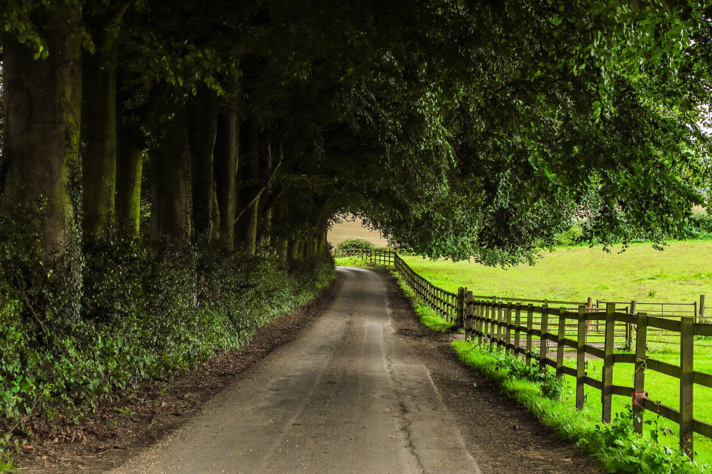

ABOUT US

Hi! We are Ron and Trish and here is a little bit about us.
Over the many years we have been together we have enjoyed everything that life has to offer. We are blessed to be the parents of one amazing son. Him and his wife have blessed us with 3 beautiful granddaughters. Together they all live in Hawaii.
Over the last 10 years we have been raising and breeding Great Danes. We currently have both American and European Great Danes.
Antiques have been both a hobby and passion for the two of us. Together we share over 40 years of treasure seeking and antique saving experience. We have an eye for beauty and a skill for cultivating treasures for those that come to us for their antiques and treasures.
We are a multifaceted team with expertise and interest in many arenas in life. We also perform musically for different events and have over 35 years of experience in sharing our love for music with other people. Ron Plays saxophone and guitar while Trish plays keyboard. Together we both sing as well. We have performed at dances, festivals, reunions, and parties. We are known for our wit and banter with the audience. We love the constant recommendations and amazing reviews that we receive every time we perform.
We also have a wedding and event barn that is gorgeous and over 100 years old. The inside is a rustic masterpiece that is a definite outward expression of our love for the finer things in life. The inside is abundantly beautiful with rough sawn floors, chandeliers, goreous wooden and rustic accents, and patio lighting. Events held here always boast about the amount of care and compassion that Ron and Trish show to every single one of their guests.
Overall, we are regular people just like you. We love life and believe fully in doing all that we can, while we can. Our compassionate understanding and commitment to kindness is what sets us apart from the rest. Anyone that enters our trove of treasures will immediately feel like family, and be welcomed with open arms.